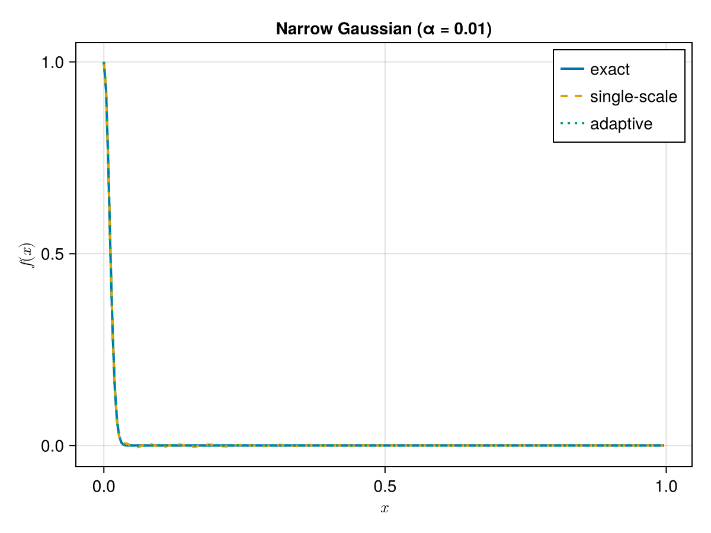
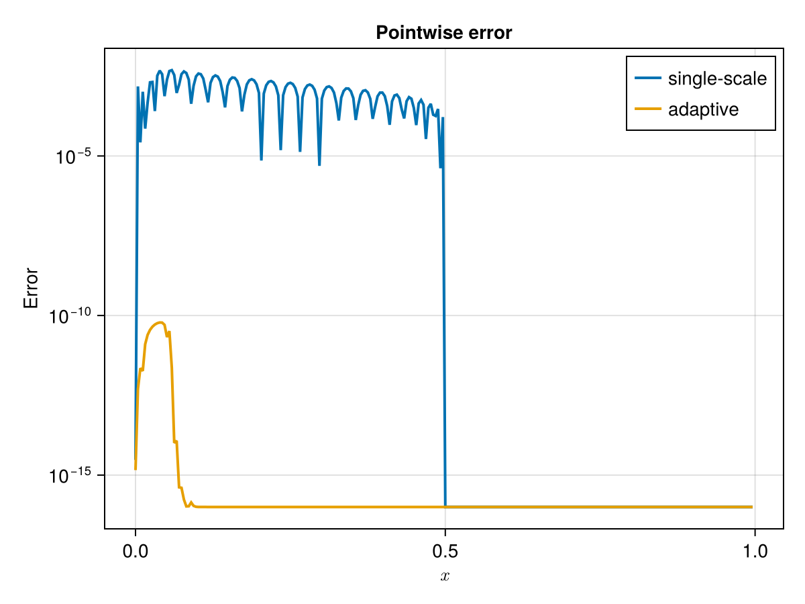
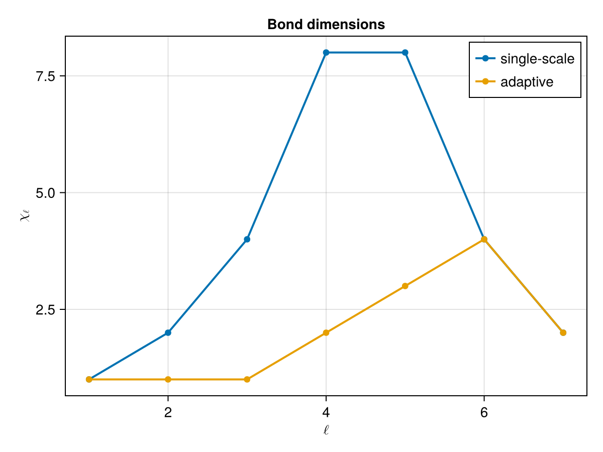
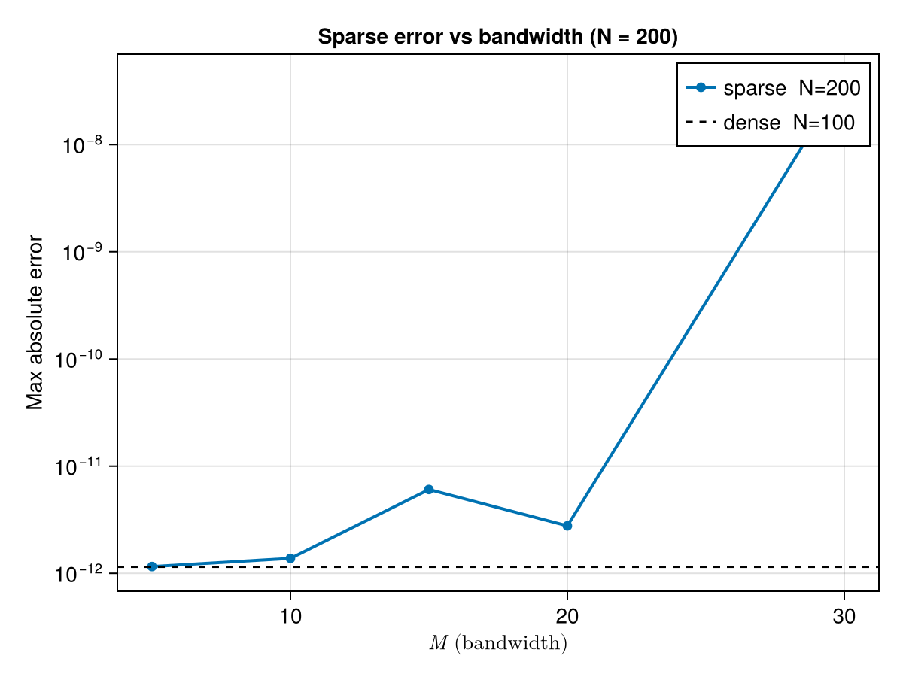
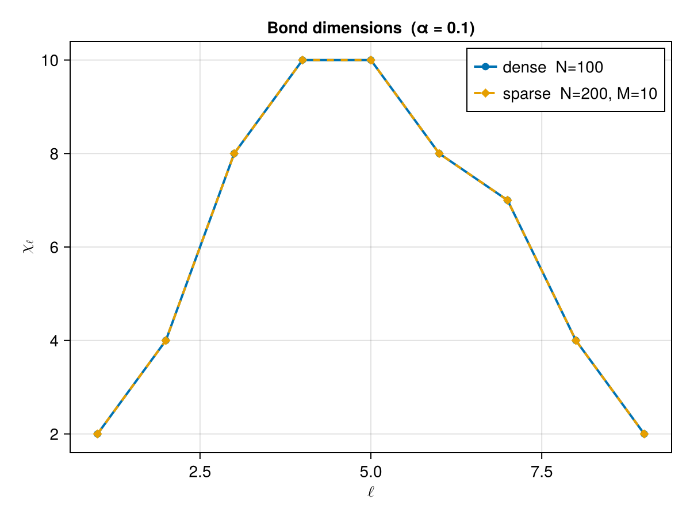

Examples
Highly oscillatory function interpolation
In this example we interpolate $f(x) = \cos(x^2) + \sin(\pi x)$ on $[-2, \sqrt{2}]$ using a single-scale QTT with $K = 10$ Chebyshev nodes and $R = 8$ quantics bits ($2^8 = 256$ grid points).
using InterpolativeQTT
import TensorCrossInterpolation as TCI
f(x) = cos(x^2) + sin(π * x)
a, b = -2.0, sqrt(2)
K = 10
R = 8
tt = InterpolativeQTT.interpolatesinglescale(f, a, b, R, K)(::TensorCrossInterpolation.TensorTrain{Float64, 3}) (generic function with 1 method)This returns a TensorTrain object. We evaluate it on the quantics grid and plot against the exact function.
import QuanticsGrids as QG
using CairoMakie
grid = QG.DiscretizedGrid(R, a, b)
plotquantics = QG.grididx_to_quantics.(Ref(grid), 1:2^R)
plotx = QG.grididx_to_origcoord.(Ref(grid), 1:2^R)
ttdata = tt.(plotquantics)
let
fig = Figure()
ax = Axis(fig[1, 1], xlabel = L"x", ylabel = L"f(x)", title = "Single-scale interpolation")
lines!(ax, plotx, f.(plotx), label = L"f(x)", linewidth = 2.0, linestyle = :solid)
lines!(ax, plotx, ttdata, label = L"K=%$K", linewidth = 2.0, linestyle = :dash)
axislegend(ax, pos = :best)
fig
end
Adaptive interpolation of a narrow Gaussian
Functions with fine-scale features require many Chebyshev nodes when interpolated uniformly. The adaptive construction refines only the intervals where the local error is large, keeping the QTT rank small.
We consider $f(x) = e^{-x^2 / (2\alpha^2)}$ with $\alpha = 0.01$ — a Gaussian whose width is only $1\%$ of the domain $[0, 1]$.
using InterpolativeQTT
import QuanticsGrids as QG
import TensorCrossInterpolation as TCI
using CairoMakie
α = 0.01
f(x) = exp(-0.5 * (x / α)^2)
a, b = 0.0, 1.0
K = 25
R = 8
tt = InterpolativeQTT.interpolatesinglescale(f, a, b, R, K)
tt_adaptive = InterpolativeQTT.interpolateadaptive(f, a, b, R, K)
grid = QG.DiscretizedGrid(R, a, b)
plotquantics = QG.grididx_to_quantics.(Ref(grid), 1:2^R)
plotx = QG.grididx_to_origcoord.(Ref(grid), 1:2^R)
origdata = f.(plotx)
ttdata = tt.(plotquantics)
ttdata_a = tt_adaptive.(plotquantics)
nothingThe function and both approximations:
let
fig = Figure()
ax = Axis(fig[1, 1], xlabel = L"x", ylabel = L"f(x)", title = "Narrow Gaussian (α = $α)")
lines!(ax, plotx, origdata, label = "exact", linewidth = 2.0, linestyle = :solid)
lines!(ax, plotx, ttdata, label = "single-scale", linewidth = 2.0, linestyle = :dash)
lines!(ax, plotx, ttdata_a, label = "adaptive", linewidth = 2.0, linestyle = :dot)
axislegend(ax, pos = :best)
fig
end
Pointwise errors show that the adaptive QTT resolves the peak while the single-scale one misses it entirely:
let
fig = Figure()
ax = Axis(fig[1, 1], xlabel = L"x", ylabel = "Error", yscale = log10,
title = "Pointwise error")
lines!(ax, plotx, abs.(ttdata .- origdata) .+ 1e-16, label = "single-scale", linewidth = 2)
lines!(ax, plotx, abs.(ttdata_a .- origdata) .+ 1e-16, label = "adaptive", linewidth = 2)
axislegend(ax, pos = :best)
fig
end
The bond dimensions reveal where refinement happened — the adaptive QTT concentrates rank near the peak:
let
fig = Figure()
ax = Axis(fig[1, 1], xlabel = L"\ell", ylabel = L"\chi_\ell", title = "Bond dimensions")
scatterlines!(ax, 1:(R - 1), TCI.linkdims(tt), label = "single-scale", linewidth = 2)
scatterlines!(ax, 1:(R - 1), TCI.linkdims(tt_adaptive), label = "adaptive", linewidth = 2)
axislegend(ax, pos = :best)
fig
end
Sparse construction for a Lorentzian peak
For functions with a known bandwidth structure one can use interpolatesinglescale_sparse, which builds the interpolation tensor from a banded set of Chebyshev interactions instead of the full tensor product. This reduces the TCI cost and the resulting bond dimensions.
We approximate the Lorentzian $f(x) = \alpha / \sqrt{\alpha^2 + (x - \tfrac{1}{2})^2}$ with $\alpha = 0.1$ on $[0, 1]$.
using InterpolativeQTT
import QuanticsGrids as QG
import TensorCrossInterpolation as TCI
using CairoMakie
α = 0.1
f(x) = α / sqrt(α^2 + (x - 0.5)^2)
a, b = 0.0, 1.0
R = 10
N_dense = 100
N_sparse = 200
grid = QG.DiscretizedGrid{1}(R, a, b)
quanticsinds = QG.grididx_to_quantics.(Ref(grid), 1:2^R)
plotx = QG.grididx_to_origcoord.(Ref(grid), 1:2^R)
origdata = f.(plotx)
tt_dense = InterpolativeQTT.interpolatesinglescale(f, a, b, R, N_dense)
err_dense = maximum(abs.(tt_dense.(quanticsinds) .- origdata))
M_values = [5, 10, 15, 20, 30]
tt_sparse = [InterpolativeQTT.interpolatesinglescale_sparse(f, a, b, R, N_sparse, M) for M in M_values]
errs_sparse = [maximum(abs.(tt.(quanticsinds) .- origdata)) for tt in tt_sparse]
println("Dense N=$N_dense: max err = $err_dense rank = $(TCI.rank(tt_dense))")
for (M, tt, err) in zip(M_values, tt_sparse, errs_sparse)
println("Sparse N=$N_sparse M=$M: max err = $err rank = $(TCI.rank(tt))")
endDense N=100: max err = 1.1503020758141247e-12 rank = 10
Sparse N=200 M=5: max err = 1.1567413693569506e-12 rank = 10
Sparse N=200 M=10: max err = 1.380118241911532e-12 rank = 10
Sparse N=200 M=15: max err = 6.054934331700679e-12 rank = 10
Sparse N=200 M=20: max err = 2.773781204723491e-12 rank = 10
Sparse N=200 M=30: max err = 4.1328170774512785e-8 rank = 13Increasing the bandwidth $M$ drives the sparse error toward the dense baseline:
let
fig = Figure()
ax = Axis(fig[1, 1], xlabel = L"M \text{ (bandwidth)}", ylabel = "Max absolute error",
title = "Sparse error vs bandwidth (N = $N_sparse)", yscale = log10)
scatterlines!(ax, M_values, errs_sparse, label = "sparse N=$N_sparse", linewidth = 2)
hlines!(ax, [err_dense], color = :black, linestyle = :dash, label = "dense N=$N_dense")
axislegend(ax, pos = :topright)
fig
end
With a moderate bandwidth $M = 10$ the sparse QTT already matches the dense construction in accuracy while using far fewer bond dimensions:
M_best = 10
tt_best = tt_sparse[findfirst(==(M_best), M_values)]
let
fig = Figure()
ax = Axis(fig[1, 1], xlabel = L"\ell", ylabel = L"\chi_\ell",
title = "Bond dimensions (α = $α)")
scatterlines!(ax, 1:(R - 1), TCI.linkdims(tt_dense),
label = "dense N=$N_dense", linewidth = 2, marker = :circle)
scatterlines!(ax, 1:(R - 1), TCI.linkdims(tt_best),
label = "sparse N=$N_sparse, M=$M_best", linewidth = 2, marker = :diamond, linestyle=:dash)
axislegend(ax, pos = :topright)
fig
end
Inverting a QTT to a multiresolution Chebyshev grid
invertqtt maps a QTT back to a multiresolution array of function values on Chebyshev-Lobatto nodes. The result is a vector of matrices $[S_1, S_2, \ldots, S_{K-q}]$ where $S_k[i, \beta+1]$ approximates $f$ at the $\beta$-th Chebyshev-Lobatto node in the $i$-th sub-interval at level $k$.
We build a QTT with interpolatesinglescale, invert it with invertqtt, and check how closely the finest-level output reproduces $f$ at each Chebyshev node.
import QuanticsGrids as QG
using InterpolativeQTT
R = 12
N = 10
a, b = -2.0, 3.0
f(x) = exp(-x^2 + cos(x))
tol = 1.0e-10
P = InterpolativeQTT.getChebyshevGrid(N)
tt = InterpolativeQTT.interpolatesinglescale(f, a, b, R, N; tolerance = tol)
result = InterpolativeQTT.invertqtt(tt, P; q = 1)
K_out = R - 1
S = result[K_out]
println("Output shape: $(size(S)) — $(2^K_out) sub-intervals × $(N+1) Chebyshev nodes")Output shape: (2048, 11) — 2048 sub-intervals × 11 Chebyshev nodesThe finest-level matrix S contains function values on a grid with $2^{R-1}$ sub-intervals, each holding $N+1$ Chebyshev-Lobatto nodes. Coarser levels $S_k$ for $k < K-q$ are obtained by restriction and provide a multiresolution view of the same function.
We compare $S[i, \beta+1]$ against the exact function value at each Chebyshev point:
max_err = maximum(
abs(S[i, β + 1] - f(a + (b - a) * (i - 1 + P.grid[β + 1]) / 2^K_out))
for i in 1:2^K_out, β in 0:N
)
println("Max error at Chebyshev nodes: $max_err")Max error at Chebyshev nodes: 0.000540733094600232The error is bounded by the SVD truncation tolerance plus the $O(h^2)$ accuracy of the linear Stage 1 interpolation ($h = 2^{-(R-1)}$). Both contributions are small for moderate $R$.